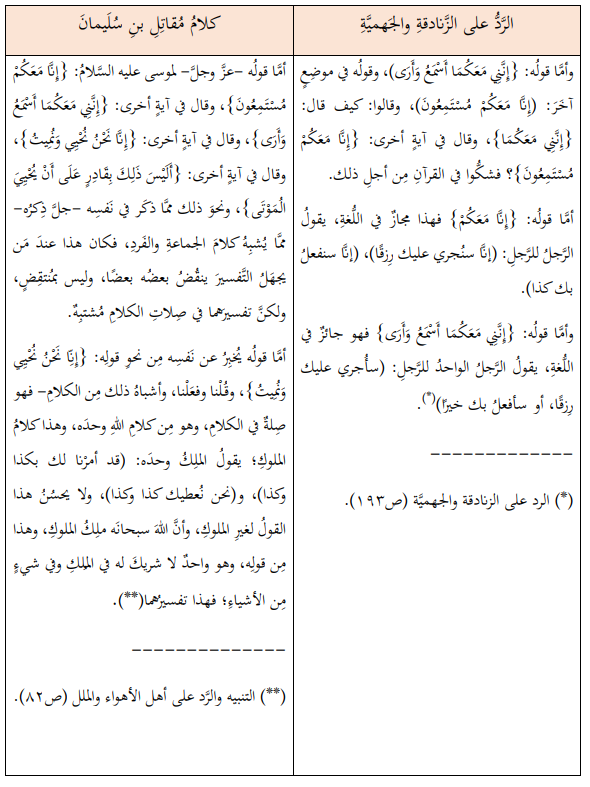

أسمارُ "النَّقدِ التَّاريخيِّ"، وزخارفُ "البحثِ العِلميِّ".
قِراءةٌ نَقْديَّةٌ لمقالةِ الأسْتاذِ عَبْدِ اللهِ الغِزِّيِّ
عن صِفةِ الكَلامِ للباري سُبْحانَه.
(الحَلْقةُ الخامسةُ)
البحثُ التَّاريخيُّ بَينَ التَّحقيقِ والتَّلفيقِ
الشَّيخُ الدُّكتور بَنْدر بن عبدالله الشُّويقيُّ
12 صفر 1444هـ
ما زِلنا في حضرةِ الأستاذِ عبدِ اللهِ الغِزِّيِّ، والإشكالاتِ المنهجيَّةِ في "إجراءاتِه البحثيَّةِ" التي سلكها في ورقتِه المنشورةِ بعنوانِ: (القراءة المذهبيَّة للتَّاريخِ العَقديِّ)، وفي بحثِه الآخَرِ الذي نشره بعدَ ذلك تحتَ عنوانِ: (قراءة في نصِّ رسالةِ الرَّدِّ على الزَّنادقةِ والجَهميَّةِ). وقد رأينا فيما تقدَّم صورًا ونماذجَ مِن طريقةِ الأستاذِ في تركيبِ وتلفيقِ مُقدِّماتٍ غَيرِ محرَّرةٍ، غرضُها التَّمهيدُ للفكرةِ التي يرغبُ في الوصولِ إليها، عاكسًا بذلك أصولَ البحثِ العِلميِّ وقواعدَه التي تُلزمُ الباحثَ بتحريرِ مُقدِّماتِه وتصحيحِها قبلَ الانتقالِ إلى بناءِ النَّتائجِ عليها.
وفي هذه الحَلْقةِ سنقِفُ على المزيدِ والمزيدِ ممَّا يشرحُ ذلك الإشكالَ المنهجيَّ لدى الأستاذِ، وأودُّ التَّأكيدَ هنا إلى ما أشرتُ إليه في الحَلْقةِ الرَّابعةِ مِن هذه السِّلسلةِ، فأنا الآنَ لا أجادلُ الأستاذَ في إثباتِ أو نفيِ نِسبةِ (رسالة الرَّدِّ على الزَّنادقةِ والجَهميَّةِ) للإمامِ أحمَدَ، كما أنَّي لم أشرَعْ إلى الآنَ في تحريرِ مذهبِ أهلِ الحديثِ في إثباتِ صفةِ الكلامِ للهِ سبحانَه، وإنَّما حديثي كلُّه إلى الآنَ يدورُ فقط حولَ منهجِ التَّلفيقِ الذي يعتمِدُه الأستاذُ في الوقتِ الذي يرفعُ فيه شعارَ: أصولِ البحثِ العِلميِّ، وقواعدِ النَّقدِ التَّاريخيِّ.
موقفُ الإمامِ أحمَدَ مِن كتابِ (الرِّسالةِ) للإمامِ الشَّافعيِّ
لمَّا أرادَ الأستاذُ نفيَ رسالةِ (الرَّدِّ على الزَّنادقةِ والجَهميَّةِ) عن الإمامِ وضَع لنا عنوانًا يقولُ: "موقفُ الإمامِ أحمَدَ مِن تأليفِ الكُتبِ في غيرِ الأحاديثِ والآثارِ"، وخلاصةُ ما ذكَره تحتَ هذا العنوانِ: أنَّ الإمامَ أحمَدَ كان ينهى عن تأليفِ الكتُبِ التي تشتمِلُ على غَيرِ الأحاديثِ والآثارِ، وعليه فلا يمكنُ أن تكونَ رسالةُ (الرَّدِّ) مِن تصنيفِه.
قال الأستاذُ: "نستطيعُ أن نقولَ قولًا عامًّا: إنَّ مِن منهجِ الإمامِ كراهةَ وضعِ الكُتبِ في غيرِ الأحاديثِ والآثارِ...، وقد عاب الإمامُ -أيضًا- على جماعةٍ مِن فُقهاءِ عصرِه تأليفَ الكتُبِ في غيرِ الأحاديثِ والآثارِ...، وعلَّل نهيَه عن كتابةِ الرِّسالةِ للشَّافعيِّ بأنَّها شيءٌ مُحدَثٌ، وإن كان رُوِي عنه أنَّه كان يحتفِظُ بنُسخةٍ مِن الرِّسالةِ القديمةِ والرِّسالةِ الجديدةِ بخطِّه"(1).
إذا تأمَّلْنا هذا الكلامَ الذي ساقه الأستاذُ هنا، وراجَعْنا المصادرَ التي ينقلُ منها فسيظهرُ أمامَنا إشكالُ تركيبِ النَّتائجِ على مُقدِّماتٍ غيرِ مُحرَّرةٍ؛ فالأستاذُ هنا استَشهد بنصَّينِ مُتعارضَينِ مُتناقضَينِ، كان المُفترَضُ -حسَبَ قواعدِ النَّقدِ التَّاريخيِّ- أن يُعالِجَ تعارُضَهما ليفهمَ موقفَ الإمامِ قَبلَ أن ينتقِلَ إلى بناءِ النَّتيجةِ على تصوُّرٍ ناقصٍ لمذهبِه، غيرَ أنَّ الأستاذَ لم يتوقَّفْ عندَ هذا التعارُضِ، بل إنَّه طوى وغطَّى بعضَ ما يُبرِزُ التعارُضَ ويكشِفُه للقارئِ!
فأمَّا قولُ الإمامِ أحمَدَ: إنَّ كتابَ (الرِّسالةِ) للشَّافعيِّ "شيءٌ مُحدَثٌ" فقد أحال فيه الأستاذُ على روايةٍ في طبقاتِ الحنابلةِ؛ فيها: أنَّ أحمَدَ سُئِل: "أترى أن يكتُبَ الرَّجلُ كُتبَ الشَّافعيِّ؟"، قال: لا، قيل له: "أترى أن يكُتبَ (الرِّسالةَ)؟"، قال: لا تسألْني عن شيءٍ مُحدَثٍ، قيل له: "كتبْتَها؟"، قال: "معاذَ اللهِ!"(2)، وهذا الجزءُ الأخيرُ مِن كلامِ الإمامِ أحمَدَ الذي ينفي فيه أن يكونَ كتَب رسالةَ الشَّافعيِّ لم ينقلْه الأستاذُ لنا رغمَ وجودِه في الرِّوايةِ التي يستشهِدُ بها، ولو أنَّه نقل هذا الجزءَ مِن الرِّوايةِ لَفهِم القارئُ أنَّه يتناقضُ معَ ما نقلَه الأستاذُ بعدَ ذلك عندَما قال: وإن كان رُوِيَ عنه أنَّه كان يحتفِظُ بنُسخةٍ مِن الرِّسالةِ القديمةِ والرِّسالةِ الجديدةِ بخطِّه"(3).
فنحن هنا أمامَ روايتَينِ اثنتَينِ: روايةٍ يُسألُ فيها أحمَدُ إن كان كتَب رسالةَ الشَّافعيِّ، فيقولُ: "معاذَ اللهِ!"، وروايةٍ أخرى فيها أنَّ أحمَدَ كتَب الرسالةَ بخطِّ يدِه مرَّتَينِ، فأيُّ الرِّوايتَينِ أصَحُّ؟ وإن كانتا صحيحتَينِ معًا، فهل تغيَّر موقفُ الإمامِ مِن رسالةِ الشَّافعيِّ وما ماثَلها؟
قواعدُ البحثِ العِلميِّ هنا تفرضُ تحريرَ موقفِ الإمامِ، ومُعالجةَ هذا التَّعارُضِ بينَ الرِّوايتَينِ قبلَ الاستشهادِ بأيٍّ منهما، أمَّا التقاطُ ما يعضدُ النَّتيجةَ المُستهدَفةَ، ثُمَّ غضُّ الطَّرفِ عن دَلالةِ الرِّوايةِ المُعارِضةِ- فهذا مسلكٌ يندرجُ تحتَ ما ظَللْتُ أسمِّيه: زخارفَ وأسمارًا.
مُعالجةُ هذا التَّعارُضِ كانت ستكشفُ للأستاذِ خطأَ قولِه: "نستطيعُ أن نقولَ قولًا عامًّا: إنَّ مِن منهجِ الإمامِ كراهةَ وضعِ الكُتبِ في غيرِ الأحاديثِ والآثارِ"؛ فأحمَدُ -رحِمه اللهُ- وإن جاءت عنه رواياتٌ كثيرةٌ في النَّهيِ عن الكُتبِ المُشتمِلةِ على غيرِ الحديثِ والأثرِ(4)- فإنَّ ثمَّةَ رواياتٍ أخرى كثيرةً -أيضًا- تُبيِّنُ أنَّه لم يثبُتْ على هذا الموقفِ الصَّارمِ، وأنَّه رجَع عن بعضِه، فرخَّص في نوعٍ مِن الكُتبِ التي لم يرَ فيها مُعارَضةً للحديثِ بالرَّأيِ، وكان مِن جملةِ ما رخَّص فيه الإمامُ، بل ما حثَّ على قراءتِه وكتابتِه مُصنَّفاتُ الإمامِ الشَّافعيِّ، بل قد نصَّ ورغَّب في العنايةِ بكتابِ (الرِّسالةِ) خاصَّةً، الذي نقل لنا الأستاذُ أنَّ أحمَّدَ اعتبَرها شيئًا مُحدَثًا.
فممَّا صحَّ عن الإمامِ أنَّه كان يقولُ: "صاحبُ الحديثِ لا يشبَعُ مِن كُتبِ الشَّافعيِّ"(5).
ويقولُ أبو زُرعةَ الرَّازيُّ؛ تلميذُ الإمامِ: "نظَر أحمَدُ بنُ حنبلٍ في كُتبِ الشَّافعيِّ، وقرأ له كتابًا في مناقِبِه"(6).
وقال الإمامُ إسحاقُ بنُ راهَوَيه: "كتبْتُ إلى أحمَدَ، وسألْتُه أن يوجِّهَ إليَّ مِن كُتبِ الشَّافعيِّ ما يدخُلُ في حاجتي، فوجَّه إليَّ بكتابِ (الرِّسالةِ)"(7). وكان أحمَدُ لمَّا وجَّه إلى إسحاقَ بنُسخةِ (الرِّسالةِ) كتَب له يقولُ: "قد أنفذْتُ إليك مِن كُتبِه كتابًا يدُلُّك على عوامِّ أصولِ العِلمِ"(8).
وقال الميمونيُّ: "قال لي أحمَدُ بنُ حنبلٍ: لمَ لا تنظرُ في كُتبِ الشَّافعيِّ؟ فما مِن أحدٍ وضع الكُتبَ حتَّى ظهرَت أتبَعُ للسُّنَّةِ مِن الشَّافعيِّ؟!"(9)، ويروي البَيهقيُّ أنَّ أحمَدَ لمَّا قال للميمونيِّ: "لمَ لا تنظرُ في كُتبِ الشَّافعيِّ؟!" قال له الميمونيُّ: "يا أبا عبدِ اللهِ، نحن مشاغيلُ"، فقال الإمامُ: "فكتابُ (الرِّسالة)، فانظرْ فيها؛ فإنَّها مِن أحسَنِ كُتبِه"(10).
ويذكرُ الحافظُ مُحمَّدُ بنُ مُسلِمِ بنِ وارةَ أنَّه سأل أحمَدَ عمَّا ينظرُ فيه مِن الكُتبِ: كُتبِ مالِكٍ، أو الثَّوريِّ، أو الأوزاعيِّ؟ فقال له أحمَدُ: "عليك بالشَّافعيِّ؛ فإنَّه أكثَرُهم صوابًا، أو أتبَعُهم للآثارِ"، قال: قلْتُ لأحمَدَ: فما ترى في كُتبِ الشَّافعيِّ؛ التي عندَ العِراقيِّينَ أحَبُّ إليك، أو التي بمِصرَ؟ قال: عليك بالكُتبِ التي وضَعها بمِصرَ؛ فإنَّه وضع هذه الكُتبَ بالعراقِ، ولم يُحكِمْها، ثُمَّ رجَع إلى مِصرَ فأحكَم ذلك"(11).
فبهذه الرِّواياتِ التي طواها الأستاذُ وغيَّبها تتَّضحُ الصُّورةُ الكاملةُ لموقفِ الإمامِ أحمَدَ مِن تصنيفِ الكُتبِ، ومِن كتابِ (الرِّسالةِ) خاصَّةً؛ الذي نقل لنا الأستاذُ فقط أنَّ الإمامَ قال عنها "شيءٌ مُحدَثٌ"!
هذا الاجتزاءُ الذي مارسه الأستاذُ هنا هو ما قصدْتُه حينَ قلْتُ: إنَّ الأستاذَ يُعطي القارئَ مُقدِّماتٍ غيرَ محرَّرةٍ؛ كي يصِلَ به إلى النَّتيجةِ المُستهدَفةِ؛ فلأنَّه يريدُ نفيَ رسالةِ (الرَّدِّ) عن الإمامِ أحمَدَ احتاج إلى رسمِ موقفٍ واحدٍ للإمامِ لا تفصيلَ فيه، يمنعُ مِن تصنيفِ ما عدا كُتبَ الحديثِ.
أقولُ هذا على فرضِ أنَّ الأستاذَ كان يملِكُ تصوُّرًا لمذهبِ الإمامِ ونهجِه، أمَّا إن كان لا يملِكُ مِثلَ هذا التَّصوُّرِ، ومعَ ذلك بنى فكرتَه على رؤيةٍ قاصرةٍ، فهذا إشكالٌ آخَرُ لدى الأستاذِ يأتي الكلامُ عنه؛ إشكالٌ يتعلَّقُ بانصرافِه إلى الكُتبِ الكلاميَّةِ بطريقةٍ أثمرَت فقرًا شديدًا في تصوُّرِ مذاهِبِ أئمَّةِ السَّلفِ، وقد رأيْنا مِن قبلُ كيف كان يتلمَّسُ مذاهِبَهم في كُتبِ الجَهميَّةِ والمُعتزِلةِ!
تناقُضُ الأستاذِ في اعتبارِ المصادِرِ
ذكرْتُ في الحَلْقةِ الرَّابعةِ مِن هذه السِّلسلةِ أنَّ الأستاذَ إذا اعترضَتْ طريقَ مذهبيَّتِه معلومةٌ ثابتةٌ تاريخيًّا أجهَد نَفسَه في إثارةِ الإشكالاتِ حولَها، وبالمقابِلِ متى وجَد شيئًا يخدُمُ فكرتَه المُستهدَفةَ فإنَّه يلتقِطُه دونَ فحصٍ أو تمحيصٍ، ثُمَّ يوظِّفُه في إسنادِ رأيِه.
ومِن النَّماذجِ الشَّاهدةِ بذلك: أنَّه ذكَر أنَّ خلافَ الحنبليَّةِ معَ الأشعَريَّةِ قبلَ ابنِ تيميَّةَ كان يدورُ حولَ إثباتِ الحرفِ والصَّوتِ في كلامِ اللهِ سبحانَه، وليس حولَ (تعليقِ الكلامِ بالمشيئةِ)، وفي هذا السِّياقِ قال: "ومَحلُّ الجدلِ هذا في حقيقةِ صفةِ الكلامِ بينَ حنابلةِ ما قبلَ الشَّيخِ معَ الأشعَريَّةِ- نراه كذلك معَ أهلِ الحديثِ مِن غيرِ الحنابلةِ، كما في كتابِ (غاية المَرامِ في مسألةِ الكلامِ) لفَخرِ الدِّينِ الأرمَويِّ الشَّافعيِّ، وقد قرَّر قِدَمَ حروفِ القرآنِ خلافًا للأشعَريَّةِ، ونسَب ما قرَّرهُ للسَّلفِ"(12).
فكما نرى: الأستاذُ هنا أحال على كتابٍ لرجلٍ يُقالُ له: فَخرُ الدِّينِ الأرمَويُّ.
فمَن يكونُ هذا الأرمَويُّ الذي جعَله الأستاذُ مرجِعًا في معرفةِ مذهبِ أهلِ الحديثِ؟
هل يستطيعُ الأستاذُ أن يُقدِّمَ لنا تعريفًا به؟
وهل لهذا الأرمَويِّ ولكتابِه وجودٌ أصلًا؟
لن أجيبَ عن شيءٍ مِن هذه التَّساؤلاتِ، وسأدعُ الجوابَ للأستاذِ الذي أزعُمُ أنَّه مهما أتعَب نَفسَه وأضناها فلن يعرِفَ هذا الرَّجلَ ولا كتابَه الذي أحال عليه في تحريرِ موقفِ أهلِ الحديثِ!
الأستاذُ أخذَ كلامَ هذا الأرمَويِّ مِن رسالةٍ منسوبةٍ للنَّوَويِّ، طُبِعَت قبلَ قُرابةِ العِشرينَ عامًا، عنوانُها: (جزءٌ فيه ذِكرُ اعتقادِ السَّلفِ في الحروفِ والأصواتِ). والإشكالاتُ التَّاريخيَّةُ في صحَّةِ نِسبةِ هذه الرِّسالةِ للنَّوَويِّ أظهَرُ وأضخَمُ بكثيرٍ جدًّا مِن تلك النَّقداتِ التي أبداها الأستاذُ في اعتراضِه على نِسبةِ رسالةِ (الرَّدِّ على الزَّنادقةِ) للإمامِ أحمَدَ.
يتبيَّنُ ذلك مِن خلالِ ما يأتي:
1-إذا كان الحنابلةُ مُتَّفقينَ على نِسبةِ رسالةِ (الرَّدِّ) للإمامِ أحمَدَ فإنَّ تلك الرِّسالةَ المنسوبةَ للنَّوَويِّ لم تُذكَرْ قطُّ في مصادرِ ترجمتِه، ولا نسَبها أحدٌ له -فيما أعلَمُ-، لا مِن الشَّافعيَّةِ ولا مِن غيرِهم، فليُخبِرْنا الأستاذُ على أيِّ شيءٍ اعتمَد في تصحيحِ تلك النِّسبةِ!
2-تلك الرِّسالةُ طُبِعَت عن أصلٍ خطِّيٍّ لا يوجَدُ عليه سندٌ ولا سماعاتٌ، والذي قام على طَبعِها لم يبحَثْ في صحَّةِ نِسبتِها له.
3-لا يوجَدُ في كُتبِ العقائِدِ ولا غيرِها أيَّةُ نُقولٍ عن هذه الرِّسالةِ، ولا حُكِي عن النَّوَويِّ شيءٌ مما ذُكِر فيها؛ رغمَ مكانةِ النَّوَويِّ، ورغمَ كونِ المسألةِ مِن مواضِعِ النِّزاعِ الكُبرى معَ الأشعَريَّةِ!
4-الرِّسالةُ تضمَّنَت نقدًا حادًّا للأشعَريَّةِ؛ مِثلَ ما نقله مُقرًّا أنَّهم: "لا يستطيعونَ التَّصريحَ بمذهبِهم إلَّا على نحوٍ مِن المِراءِ"(13)، وهذا شيءٌ يصعُبُ صدورُه مِن النَّوَويِّ؛ فمُخالفةُ الرِّسالةِ لنهجِه ولمَشرَبِه أشَدُّ ظهورًا ممَّا يدَّعيه الأستاذُ مِن مُخالَفةِ رسالةِ (الرَّدِّ) لنهجِ الإمامِ أحمَدَ.
5-مُؤلِّفُ تلك الرِّسالةِ أطالَ في إثباتِ أنَّ اللهَ يتكلَّمُ بحرفٍ وصوتٍ، وفصَّل في التَّشنيعِ على الأشعَريَّةِ المُنكِرينَ لهذا، في حينِ نجِدُ ابنَ العطَّارِ؛ تلميذَ النَّوَويِّ، وأقرَبَ النَّاسِ إليه، وأكثَرَهم معرفةً به وتعظيمًا له- نجِدُه يقولُ: "نبغَت طائفةٌ، فتكلَّمَت في كيفيَّةِ كلامِ اللهِ، وهل هو بحرفٍ وصوتٍ كما نتكلَّم به؟ وكُلُّ هذا بِدعةٌ مُحدَثةٌ، يَلزَمُ منه الحُكمُ في صفاتِ اللهِ بالقياسِ"(14). ومِن المُستبعَدِ أن يتكلَّم ابنُ العطَّارِ بهذه اللَّهجةِ لو كان يعرفُ أنَّ هذا مذهبُ أجَلِّ شُيوخِه.
6-أهَمُّ مِن جميعِ ما تقدَّم: أنَّ أكثَرَ مادَّةِ الرِّسالةِ عبارةٌ عن نصٍّ طويلٍ كاد يستغرِقُ الرِّسالةَ كُلَّها، وهذا النصُّ هو الذي أحالنا الأستاذُ عليه لنعرفَ موقفَ أهلِ الحديثِ مِن خلالِه، ومُؤلِّفُ الرِّسالةِ ذكَر أنَّه نقل هذا النصَّ مِن كتابٍ عُنوانُه: (غايةُ المَرامِ في مسألةِ الكلامِ)، مِن تصنيفِ: "الشَّيخِ، الجليلِ، الإمامِ، المُتقنِ، الحافِظِ، الأوحَدِ، فَخرِ الدِّينِ، أبي العبَّاسِ، أحمَدَ بنِ الحَسنِ بنِ عُثمانَ الأرمَويِّ الشَّافعيِّ"(15).
هكذا جاء وَصفُ ذلك الشَّيخِ في تلك الرِّسالةِ المنسوبةِ للنَّوَويِّ، والإشكالُ هنا أنَّ هذا (الشَّيخَ الجليلَ الإمامَ المُتقِنَ الحافِظَ الأوحَدَ) لم يعرِفْه أحدٌ إلى اليومِ، ولا يوجَدُ له ذِكرٌ في كُتبِ التَّواريخِ والتَّراجمِ، ولا في الكُتبِ المُصنَّفةِ في طبقاتِ الشَّافعيَّةِ على كثرتِها، فلا ذِكرَ له ولا لكتابِه المُدَّعى إلَّا مِن خلالِ تلك الرِّسالةِ المنسوبةِ للنَّوَويِّ، التي لم يذكرْها أحدٌ مِن مُترجِميه أصلًا!
فكما نرى: الأستاذُ -صاحِبُ النَّقدِ التَّاريخيِّ- اعتمَد هنا على نصٍّ مِن كتابٍ مجهولٍ، لمُؤلِّفٍ مجهولٍ، منقولٍ في مصدرٍ مشكوكٍ في نسبتِه لمُؤلِّفِه!
الأستاذُ قفز فوقَ تلك الإشكالاتِ الكُبرى، معَ أنَّه حينَ تكلَّم عن رسالةِ (الرَّدِّ على الزَّنادقةِ) حرَص كثيرًا على التَّزخرُفِ بكلامِ الدُّكتورِ عبدِ الرَّحمنِ بدوي عن قاعدةِ "تصحيحِ النِّسبةِ" التي تعودُ إلى "القِسمِ الثَّاني مِن النَّقدِ الخارجيِّ"(16)! فأدواتُ النَّقدِ التَّاريخيِّ عندَ صاحِبِنا تحضُرُ وتغيبُ حسَبَ الرَّغبةِ!
وعن نفسي أقولُ:
إن كانت الحقائقُ تُؤخَذُ بالأمانيِّ فأنا أتمنَّى لو يظهَرُ ما يُثبِتُ صحَّةَ نِسبةِ تلك الرِّسالةِ للنَّوَويِّ(17)، وإلى أن يحصُلَ هذا فإنِّي لا أستطيعُ تجاوُزَ تلك الإشكالاتِ التَّاريخيَّةِ التي تُعكِّرُ صَفوَ تصحيحِ نسبتِها له -رحِمه الله-.
غيرَ أنَّ مقصودي مِن هذا كُلِّه بيانُ صورةٍ مِن صُورِ التَّناقُضِ والمِزاجيَّةِ العجيبةِ التي تظهَرُ وتتكرَّرُ في إجراءاتِ الأستاذِ البَحثيَّةِ؛ ففي حينِ نراه يتمسَّحُ بقواعدِ النَّقدِ التَّاريخيِّ للمصادرِ لمَّا أراد التَّشنيعَ على مَن يعتمِدُ رسالةَ (الرَّدِّ على الزَّنادقةِ)، التي اتَّفَق الحنابلةُ على تصحيحِ نِسبتِها للإمامِ- نراه في المُقابِلِ يعتمِدُ على رسالةٍ للنَّوَويِّ لم ينسبْها له أحدٌ، وتتناقَضُ معَ مَشرَبِه!
لسْتُ أشكُّ أنَّ الأستاذَ لو رأى أحدًا مِن مُخالِفيه يستشهِدُ بكلامِ النَّوَويِّ في تلك الرِّسالةِ ويحتجُّ بما فيها على الأشعَريَّةِ- لأقام المناحةَ على غُربتِه وسطَ واقِعِ أبحاثِنا العَقديَّةِ المُتخلِّفةِ، ولأطال الشَّكوى مِن طُغيانِ (المذهبيَّةِ) و(الرِّساليَّةِ) في أوساطِنا العِلميَّةِ!
الأستاذُ وتغييرُ التَّاريخِ
في مقالةِ (القراءةِ المذهبيَّةِ للتَّاريخِ العَقديِّ) أصاب الأستاذُ وأجاد حينَ ذكَر أنَّه لا يجوزُ لنا "أن نجعلَ قناعاتِنا الخاصَّةَ تصنعُ التَّاريخَ كما يحلو لها"، يزيدُ الأستاذُ في التَّأكيدِ على هذا، فيقولُ: "إنَّ هذا الأمرَ مرفوضٌ"(18).
لكن حين نعودُ إلى بحثِه (قراءة في نصِّ رسالةِ الرَّدِّ على الزَّنادقةِ) نجِدُ الأستاذَ يستثني نَفسَه مِن هذا الأمرِ المرفوضِ؛ فهو لم يتوقَّفْ فقط عند نفيِ الرِّسالةِ عن الإمامِ أحمَدَ، بل زاد على ذلك، فذهَب بخيالِه في رحلةٍ عبرَ الزَّمنِ إلى أعماقِ التَّاريخِ؛ ليكشفَ بعينِ بصيرتِه النَّقديَّةِ أنَّ الرِّسالةَ إنَّما هي مِن تأليفِ مُقاتِلِ بنِ سُلَيمانَ، وليست للإمامِ أحمَدَ كما توهَّم الحنابلةُ وغيرُهم مِن المُؤرِّخينَ(19).
هذا ما انتهى إليه الأستاذُ النَّاقدُ الباحِثُ الأميَزُ! وقبلَ مُناقَشةِ تلك النَّتيجةِ التي انتهى إليها هو وغفَل عنها المُؤرِّخونَ أجمعونَ نحتاجُ هنا إلى وَقفةٍ معَ سؤالٍ منهجيٍّ:
فهل يمكنُ لأيِّ باحِثٍ اليومَ أن يفحصَ نصَّ كتابٍ، ثُمَّ يحكُمَ مِن خلالِ لغةِ الكتابِ ومنهجِ المُؤلِّفِ أنَّ ذلك الكتابَ مِن تصنيفِ العالِمِ الفلانيِّ الذي عاش في القَرنِ الثَّاني، رغمَ أنَّ هذه النِّسبةَ لم يذكرْها أحدٌ مِن المُؤرِّخينَ؟!
ورغمَ خُلوِّ أسانيدِ الكتابِ وأصولِه الخطيَّةِ مِن أيِّ ذِكرٍ لهذا العالِمِ؟!
ورغمَ أنَّ ترجمةَ ذلك العالِمِ في جميعِ المصادرِ لم يُذكَرْ فيها ولو عنوانَ هذا الكتابِ؟!
ورغمَ عدمِ وجودِ نُصوصٍ لهذا العالِمِ تُطابِقُ ألفاظَ نصوصِ الكتابِ؟!
ورغمَ خُلوِّ مُحتوى الكتابِ مِن أيِّ أسماءٍ أو أحداثٍ تُرشِدُ إلى مُؤلِّفِه؟!
هذه العَقباتُ الكُبرى تجاوَزها الأستاذُ، ولم يتوقَّفْ عندَها وهو يَقْلِبُ التَّاريخَ، ويُعيدُ صياغتَه، وينسبُ لمقاتِلٍ مُؤلَّفًا لم يذكرْه له أحدٌ طَوال اثنَي عَشرَ قَرنًا!
فعَل الأستاذُ هذا وهو يكتبُ تحتَ شعارِ: النَّقدِ التَّاريخيِّ!
منهجُ النَّقدِ التَّاريخيِّ لا يُستعمَلُ أبدًا بهذه الطَّريقةِ الغريبةِ؛ فقواعدُ النَّقدِ قد تُفيدُ في نفيِ نِسبةِ كتابٍ ما إلى فلانٍ بناءً على اشتِمالِ الكتابِ على دلائِلِ النَّفيِ؛ مِثلُ أن تُذكَرَ فيه أسماءٌ أو أحداثٌ لم يُدرِكْها هذا المُؤلِّفُ، أو أن يشتمِلَ على آراءٍ تُخالِفُ مَشرَبَ المُؤلِّفِ؛ كما في رسالةِ النَّوَويِّ المُشارِ إليها آنِفًا، أو غيرِ ذلك مِن دلائِلِ وقرائِنِ النَّفيِ الواضِحةِ.
لكنَّ النَّفيَ شيءٌ، والإثباتُ شيءٌ آخَرُ؛ فنِسبةُ الكتابِ لمُؤلِّفٍ ما لا يكفي فيها مُجرَّدُ مُناسَبةِ مضمونِ الكتابِ لشخصيَّةِ المُؤلِّفِ الذي يُرادُ إلصاقُ الكتابِ به؛ فالتَّواريخُ لا تُثبَتُ أبدًا بهذه الطَّريقةِ التي سار عليها الأستاذُ.
حُجَّةُ الأستاذِ الكُبرى في نِسبةِ الرِّسالةِ لمُقاتِلِ بنِ سُلَيمانَ
الأستاذُ حينَ نسَب رسالةَ (الرَّدِّ على الزَّنادقةِ) لمُقاتِلِ بنِ سُلَيمانَ كان يتَّبِعُ رأيًا اخترَعه باحثانِ مُعاصِرانِ، ولم يذكرْه مُؤرِّخٌ قطُّ(20)، وعُمدةُ الثَّلاثةِ في هذه النِّسبةِ وُجودُ شَبهٍ بينَ جُزءٍ مِن نصٍّ لمُقاتِلٍ نقله عنه أبو الحُسَينِ الملَطيُّ (377ه)(21)، وبينَ جُزءٍ مِن نصِّ رسالةِ (الرَّدِّ على الزَّنادقةِ)؛ حيث تضمَّن النَّصَّانِ مُناقشةً وتفنيدًا مُتقارِبًا لاعتراضاتٍ كانت الزَّنادقةُ تعترِضُ بها على آياتِ القرآنِ الكريمِ، وتزعُمُ أنَّ في تلك الآياتِ تناقُضًا واضطرابًا.
وليُتنَبَّهْ هنا إلى أنَّنا نتحدَّثُ عن (تشابُهٍ) لا عن (تطابُقٍ لفظيٍّ)، ثُمَّ هو تشابُهٌ جُزئيٌّ معَ مبحَثٍ في رسالةِ (الرَّدِّ) يُقابِلُه فروقٌ كبيرةٌ ظاهرةٌ بينَ بقيَّةِ نصِّ مُقاتِلٍ، وبينَ نصِّ الرِّسالةِ.
مِثلُ هذا التَّشابُه الجُزئيُّ -الذي سأعرِضُ أنموذجًا منه- غايةُ ما يمكِنُ أن يُفيدَه: أنَّ الإمامَ أحمَدَ أفاد مِن كلامِ مُقاتِلٍ في جُزءٍ مِن رسالتِه، وبخاصَّةٍ أنَّ مِن الثَّابِتِ تاريخيًّا أنَّ الإمامَ كان مُطَّلِعًا على آراءِ مُقاتِلٍ، وأنَّه كان يُثني على معرفتِه بالقرآنِ وتفسيرِه(22)، وقد وُجِدَت على مرِّ التَّاريخِ مُصنَّفاتٌ أفادَ فيها مُتأخِّرٌ مِن مُتقدِّمٍ، فتشابَه كلامُهما، ثُمَّ جاء مَن حقَّق وحكَم بأنَّ اللَّاحِقَ أفاد مِن السَّابِقِ، وقد ساق الحافِظُ السَّخاويُّ في كتابِه (الجواهر والدُّرَر) نماذِجَ لمُصنَّفاتٍ حصل فيها مِثلُ هذا، فليرجِعْ إليه مَن شاء الوقوفَ عليها(23).
هذه الطَّريقةُ المُتَّزنةُ في مُعالَجةِ النُّصوصِ والرَّبطِ بَينَها هي ما يسلكُه أهلُ النَّقدِ والتَّحقيقِ؛ فهناك فرقٌ بينَ تشابُهِ نصَّينِ، وبينَ تطابُقِهما إلى درجةٍ تسمحُ بالحُكمِ بأنَّ هذا الكتابَ هو ذاك الكتابُ، وهذا النَّصَّ هو ذاك النَّصُّ؛ فمِثلُ هذا الحُكمِ الكبيرِ لا بُدَّ أن يقومَ على مُطابَقةٍ لفظيَّةٍ تامَّةٍ أو شِبهِ تامَّةٍ؛ بمعنى أنَّه إن جاز التَّغاضي عن بعضِ الفروقِ فلا بُدَّ أن تكونَ هذه الفروقُ في الألفاظِ يسيرةً هامشيَّةً مِن جنسِ الفروقِ التي تقعُ بينَ الأصولِ الخطِّيَّةِ للكتابِ الواحدِ.
وحتَّى يتَّضحَ حجمُ المُغالَطةِ والجِنايةِ البحثيَّةِ التي ركِبها الأستاذُ هنا باسمِ النَّقدِ التَّاريخيِّ سأعرِضُ للقارئِ أنموذجًا لمسألةٍ واحدةٍ ممَّا شغَّبَت بها الزَّنادقةُ على القرآنِ، وأضعُ نصَّ الجوابِ عنها في رسالةِ (الرَّدِّ على الزَّنادقةِ والجَهميَّةِ)، وإلى جِوارِها نصُّ كلامِ مُقاتِلٍ عن المسألةِ نَفسِها، وسيتَّضحُ للقارئِ ما إذا كنَّا أمامَ كتابَينِ مُختلفَينِ أفاد أحدُهما مِن الآخَرِ، أو أنَّنا كما -يدَّعي الأستاذُ- أمامَ نُسختَينِ مِن كتابٍ واحدٍ.
فقد كان مِن جُملةِ اعتراضاتِ الزَّنادقةِ: دعواهم التَّناقُضَ بينَ آياتٍ في القرآنِ الكريمِ يتكلَّمُ فيها اللهُ سبحانَه عن نَفسِه بضميرِ المُفرَدِ، وبينَ آياتٍ أخرى يتكلَّمُ فيها عن نَفسِه بضميرِ الجَمعِ، فلننظرْ إلى صيغةِ هذا الاعتراضِ، وإلى نصِّ الجوابِ عنه في رسالةِ (الرَّدِّ)، وإلى جِوارِه صيغةُ الاعتراضِ وجوابِه في نصِّ مُقاتِلِ بنِ سُلَيمانَ:

فهذانِ النَّصَّانِ المُتبايِنةُ ألفاظُهما يزعُمُ الأستاذُ (الناقدُ التَّاريخيُّ المنزوعُ المذهبيَّةِ والرِّساليَّةِ) أنَّهما نصٌّ واحدٌ مِن كتابٍ واحدٍ!.
وما عرضْتُه هنا ليس سوى أنموذجٍ واحدٍ، ولولا خَشيةُ الإطالةِ لعرضْتُ المزيدَ، فمَن يراجِعُ الكلامَ عن سائِرِ الآياتِ في الكتابَينِ يرى الفروقَ بَينَها ظاهرةً جليَّةً، ولن يجدَ في أيٍّ منها تطابُقًا يسمحُ بالنَّتيجةِ التي ادَّعاها ذانِك الباحثانِ وقلَّدهما فيها الباحِثُ الأميَزُ.
ولأنَّ الأستاذَ كان يُدرِكُ ما في كلامِه مِن إشكالٍ رأيناه يقولُ: "لا بُدَّ مِن الإقرارِ بعدمِ وُجودِ تطابُقٍ لفظيٍّ بينَ هذه النُّصوصِ، وإنَّما المعنى الواحِدُ مُشترَكٌ بَينَهما"!!
فإذا كان التَّطابُقُ معنويًّا، كيف جاز الحُكمُ بأنَّنا أمامَ نصٍّ واحدٍ وكتابٍ واحدٍ!
هل سمِع مخلوقٌ بنُسختَينِ مِن كتابٍ واحدٍ تتشابهانِ في المعاني دون الألفاظِ؟!
الأستاذُ حاوَل حلَّ هذا الإشكالِ، واجتهَد في ابتكارِ جوابٍ عن غيابِ التَّطابُقِ اللَّفظيِّ بينَ ما يُفترَضُ أنَّهما نصٌّ واحدٌ مِن كتابٍ واحدٍ، فكان ممَّا ذكَره أنَّه مِن الجائزِ أن يكونَ أبو الحُسَينِ الملَطيُّ الذي نقل كلامَ مُقاتِلٍ نقله بالمعنى، ولم ينقُلْه بنصِّه، فرُبَّما كان يلخِّصُ ويختصِرُ كلامَ مُقاتِلٍ، وبسببِ هذا التَّلخيصِ وقَع هذا الاختلافُ الكبيرُ!
قال الأستاذُ: "قد يكونُ تبريرُ هذا الاختلافِ اللَّفظيِّ بينَ المَصدرَينِ عائدًا إلى النَّقلِ بالمعنى، وتلخيصِ فكرةِ المنقولِ عنه"(26).
هذا ما قاله الأستاذُ النَّاقدُ بعدَ عودتِه مِن رحلتِه في أعماقِ التَّاريخِ، وها نحن نعودُ معَه ثانيةً إلى مسرحِ الزَّخارفِ والأسمارِ؛ فالأستاذُ هنا أراد حلَّ الإشكالِ فزاد فيه وضاعَفه؛ ذلك أنَّ الذي ينظرُ في أنموذجِ المُقارَنةِ الذي عرضْتُه آنِفًا يجِدُ كلامَ مُقاتِلٍ -الذي يزعُمُ الأستاذُ أنَّه مُلخَّصٌ ومُختصَرٌ- أطولَ وأوسَعَ ممَّا في رسالةِ (الرَّدِّ) التي يُفترَضُ أنَّها مصدرُ هذا التَّلخيصِ وأصلُه(27)، فكيفَ صار المُختصَرُ أطولَ مِن الأصلِ؟! وإذا كان هذا حالَ نصِّ مُقاتِلٍ بعدَ تلخيصِه واختصارِه فمعنى هذا أنَّ الفروقَ بينَ النَّصَّينِ كانت أكثَرَ ممَّا نراه بينَ أيدينا الآنَ!
يُضافُ لهذا أمرٌ آخَرُ:
فمُقاتِلُ بنُ سُلَيمانَ في نصِّه الذي نقله الملَطيُّ تناوَل اثنتَينِ وعِشرينَ مسألةً ممَّا طعنَت به الزَّنادقةُ على القرآنِ وادَّعَوا تناقُضَه؛ منها أربعةُ مسائِلَ لا وُجودَ لها كُلِّيًّا في رسالةِ (الرَّدِّ)(28) التي يُفترَضُ أنَّها الأصلُ الأوسَعُ الذي اختُصِر منه كلامُ مُقاتِلٍ!
وههنا أمرٌ ثالثٌ أيضًا:
فاعتراضاتُ الزَّنادقةِ التي عالَجها مُقاتِلٌ وأجاب عنها جاءت مُوزَّعةً على أبوابٍ: (بابُ تفسيرِ اختلافِ المواضِع)ِ، (بابُ تفسيرِ مُتشابِهِ صِلاتِ الكلامِ)، (بابُ اشتباهِ التَّقديمِ في الكلامِ)، وهذه التَّبويباتُ لا وجودَ لها في رسالةِ (الرَّدِّ) التي جاء الجوابُ فيها عن شُبَهِ الزَّنادقةِ مُوجَزًا مُرسَلًا بلا عناوينَ، فكيف تظهَرُ العناوينُ في النَّصِّ المُختصَرِ، وتغيبُ عن أصلِه؟!
أمرٌ رابعٌ:
وهو أنَّ نصَّ مُقاتِلٍ خُتِم بمبحَثٍ طويلٍ تضمَّن قواعدَ كُلِّيَّةً في تفسيرِ ألفاظِ القرآنِ الكريمِ على طريقةِ: (كُلُّ لفظةِ كذا جاءت في القرآنِ فمعناها كذا)، وهذا المبحَثُ المُطوَّلُ لا وجودَ له في رسالةِ (الرَّدِّ) التي يزعُمُ الأستاذُ أنَّها الأصلُ الذي اختُصِر منه كلامُ مُقاتِلٍ!
فمعَ هذه العَقباتِ كُلِّها، كيف قفَز الأستاذُ تلك القَفزةَ الهائِلةَ التي أوصَلتْه إلى دعوى أنَّ الكلامَينِ ما هما إلَّا نصٌّ واحدٌ مِن كتابٍ واحدٍ؟!
مِن الواضحِ أنَّ (مذهبيَّةً ما) منعَت الأستاذَ مِن الذَّهابِ إلى الحلِّ البَدَهيِّ، وهو أنَّ تفسيرَ ذلك التشابُهِ الجُزئيِّ بينَ النَّصَّينِ يرجِعُ إلى أنَّ أحمَدَ أفادَ مِن كلامِ مُقاتِلٍ في رَدِّ شُبَهِ الزَّنادقةِ؛ فلذلك جاء كلامُه أكثَرَ إيجازًا واختِصارًا.
وإن أبى الأستاذُ هذا بناءً على قناعتِه بنفيِ الرِّسالةِ عن الإمامِ أحمَدَ فلا أقَلَّ مِن أن يجعلَها لمُؤلِّفٍ مجهولٍ أفاد مِن كلامِ مُقاتِلٍ، أمَّا نِسبةُ الرِّسالةِ كُلِّها لمُقاتِلٍ بناءً على هذه المُشابَهةِ الجُزئيَّةِ المحدودةِ فالأستاذُ سيحتاجُ في هذا إلى إعلانِ براءتِه مِن أصولِ البحثِ العِلميِّ، وقواعدِ النَّقدِ التَّاريخيِّ.
مُحاولةُ الأستاذِ استنباطَ نِسبةِ الرِّسالةِ لمُقاتِلٍ مِن خلالِ قراءةِ نصِّها فقط، مع تجاهُلِ الغيابِ التَّاريخيِّ الكامِلِ لهذه النِّسبةِ- تُذكِّرُني بقولِ الدُّكتورِ حسن عُثمان في كتابِه الذي يُعَدُّ مِن أشهَرِ ما كُتِب في العربيَّةِ عن النَّقدِ التَّاريخيِّ.
"ربَّما يُحاوِلُ الباحثُ أحيانًا أن يزعُمَ لنَفسِه قُدرةً مُعيَّنةً على فَهمِ النُّصوصِ التَّاريخيَّةِ، وعلى استنباطِ الحقائِقِ منها، ويُحمِّلَ النُّصوصَ ما لا يمكنُ أن تحمِلَه ألفاظُها مِن المعاني، وتكونَ النَّتائجُ التي يستخلِصُها مُجرَّدَ مُحاوَلةٍ لإرضاءِ الغُرورِ مِن نَفسِه؛ الذي هو مِن طبائِعِ البشرِ"(29).
يبقى معَنا بعدَ هذا كُلِّه مسألةٌ ضروريَّةٌ وكبيرةٌ، كان مِن المُفترَضِ أن يتوقَّفَ معَها الأستاذُ كثيرًا قبلَ أن يندفِعَ في نِسبةِ الرِّسالةِ لمُقاتِلٍ.
مُخالَفةُ (رسالةِ الرَّدِّ على الزَّنادقةِ) لآراءِ مُقاتِلِ بنِ سُلَيمانَ:
رسالةُ (الرَّدِّ على الزَّنادقةِ والجَهميَّةِ) تضمَّنَت جوابًا ومُناقَشةً لبعضِ اعتراضاتِ الزَّنادقةِ على آياتٍ مِن القرآنِ الكريمِ، وحيثُ رغِبَ الأستاذُ في تغييرِ التَّاريخِ وتحويلِ الرِّسالةِ لتكونَ مِن تصنيفِ مُقاتِلٍ بدلَ الإمامِ أحمَدَ- فإنَّ أوَّلَ إجراءٍ بحثيٍّ يُفترَضُ أن يبدأَ به: مُقارنةُ الكلامِ عن تلك الآياتِ في الرِّسالةِ بما في تفسيرِ مُقاتِلِ بنِ سُلَيمانَ؛ كي يتحقَّقَ مِن عدمِ وجودِ اختلافٍ بينَ آراءِ مُقاتِلِ بنِ سُلَيمانَ، وبينَ ما في رسالةِ (الرَّدِّ).
هذا الإجراءُ البحثيُّ رغمَ كونِه إجراءً رئيسًا وضروريًّا فإنَّه فوق هذا إجراءٌ بالِغُ اليُسرِ والسُّهولةِ؛ فتفسيرُ مُقاتِلٍ مطبوعٌ مُتداوَلٌ (ورقيًّا وإلكترونيًّا)، ورسالةُ (الرَّدِّ) تناوَلَت فقط قُرابةَ العِشرينَ آيةً ممَّا اعترضَت عليها الزَّنادقةُ، فلا أظنُّ أنَّ مُراجَعةَ تفسيرِ تلك الآياتِ العِشرينَ في كتابِ مُقاتِلٍ كانت ستُنهِكُ الأستاذَ أو تُقرِّبُه مِن أجَلِه.
فالأستاذُ الذي كان يُعرِبُ عن قلقه من الإجراءات البحثيَّة المختزلة، نراهُ هنا يُعرِضُ إعراضاً كليَّاً عن هذا العملِ النَّقديِّ اليسيرِ والأهَمِّ، ثم يستندُ فيه إلى عملٍ قاصِرٍ قام به غيرُه!
يقولُ الأستاذُ: "قام باحثانِ بعملِ مُقارَنةٍ بينَ تفسيرِ بعضِ الآياتِ الوارِدةِ في نصِّ رسالةِ (الرَّدِّ)، معَ كتابِ التَّفسيرِ للمُفسِّرِ (مُقاتِلِ بنِ سُليمانَ)، فوجَدا مُطابَقةً لفظيَّةً أو معنويَّةً بَينَهما، وهذا يدُلُّ على أنَّ مصدرَهما واحدٌ"(30)، ثم قال الأستاذُ بعدَ ذلك: "كُلُّ القَرائِنِ تُشيرُ إلى أنَّ مُؤلِّفَ النَّصِّ (رسالة الرَّدِّ) بقسمَيه هو المُفسِّرُ (مُقاتِلُ بنُ سُلَيمانَ)"(31).
هكذا بكُلِّ سلاسةٍ ونُعومةٍ أعلَن الأستاذُ هذه النَّتيجةَ، واعتمَدها دونَ أن يبذُلَ أيَّ جُهدٍ بحثيٍّ في سبيلِ التَّحقُّقِ والتَّوثُّقِ منها! وهذا تأكيدٌ آخرُ لما سبَق ذِكرُه مِن أنَّ الأستاذَ لا يُدقِّقُ في المعلومةِ التي يشتهي توظيفَها في خِدمةِ مذهبيَّتِه؛ فباحِثُنا الأميَزُ كما ترك مُهمَّةَ النَّظرِ في الأصولِ الخطِّيَّةِ لذاك الطَّالِبِ الأمريكيِّ، فأخطأ حينَ بنى على كلامِه(32)- عادَ هنا ليُكرِّرَ المسلَكَ نَفسَه، فعوَّل في هذه المسألةِ الرئيسةِ الضَّروريَّةِ على تقليدِ عملٍ قاصِرٍ، نتائِجُه خطأٌ كما سنرى.
ولأنِّي لا أملِكُ مِثلَ (مذهبيَّةِ) الأستاذِ، ولا أحمِلُ مِثلَ (رساليَّتِه) المُزيَّنةِ بالزَّخارفِ والأسمارِ- فقد راجعْتُ تفسيرَ الآياتِ العِشرينَ في تفسيرِ مُقاتِلٍ، فوجدْتُ الكلامَ عن ثلاثٍ منها على الأقَلِّ يُخالِفُ ما في رسالةِ (الرَّدِّ على الزَّنادقةِ والجَهميَّةِ).
وفيما يأتي تفصيلُ ذلك:
الآيةُ الأولى:
عندَ قولِ اللهِ تعالى في سورةِ الرُّومِ: {لِلَّهِ الْأَمْرُ مِنْ قَبْلُ وَمِنْ بَعْدُ)؛ نقرأُ في رسالةِ (الرَّدِّ) أنَّ معنى الآيةِ: "للهِ القولُ مِن قبلِ الخَلقِ، ومِن بعدِ الخَلقِ"(33)، في حينِ أنَّنا نقرأُ في تفسيرِ مُقاتِلٍ أنَّ معناها: "للهِ الأمرُ مِن قبلِ أن يظهَرَ الرُّومُ على فارِسَ، ومِن بعدِ ما ظهرَت"(34).
وهذان قولانِ مُختلفانِ في تفسيرِ الآيةِ، حكاهما أبو عبدِ اللهِ القُرطبيُّ(35)، وقد ذهب إلى الأوَّلِ مكِّيُّ بنُ أبي طالِبٍ(36)، وإلى الثَّاني ذهَب ابنُ جَريرٍ وغَيرُه(37)، ومُقاتِلُ بنُ سُلَيمانَ أخَذ في تفسيرِه بالقولِ الثَّاني، في حينِ أنَّ مُؤلِّفَ رسالةِ (الرَّدِّ على الزَّنادقةِ والجَهميَّةِ) أخَذ بالقولِ الأوَّلِ.
الآيةُ الثَّانيةُ:
عند قولِ اللهِ تعالى: {مَا خَلَقْنَا السَّمَوَاتِ وَالْأَرْضَ وَمَا بَيْنَهُمَا إِلَّا بِالْحَقِّ)؛ نقرأُ في رسالةِ (الرَّدِّ) أنَّ المُرادَ بالحقِّ في الآيةِ قولُ اللهِ: (كُنْ) لمَّا أراد خَلقَ السَّمواتِ والأرضِ، فالذي يرجِعُ لرسالةِ (الرَّدِّ) يقرأُ فيها: "الحقُّ الذي خلَق به السَّمواتِ والأرضَ هو قولُه؛ لأنَّ اللهَ تعالى يقولُ الحقَّ، قال: {وَالْحَقَّ أَقُولُ}، {وَيَوْمَ يَقُولُ كُنْ فَيَكُونُ، قَوْلُهُ الْحَقُّ}؛ فالحقُّ الذي خلَق به السَّمواتِ والأرضَ قد كان قبلَ السَّمواتِ والأرضِ، والحقُّ قولُه، وليس قولُه مخلوقًا"(38).
هذا ما في رسالةِ (الرَّدِّ)، في حينِ نقرأُ في تفسيرِ مُقاتِلٍ أنَّ معنى الآيةِ أنَّ اللهَ لم يخلُقِ السَّمواتِ والأرضَ باطِلًا؛ قال مُقاتِلٌ: "{وَمَا خَلَقْنَا السَّمَوَاتِ وَالْأَرْضَ وَمَا بَيْنَهُمَا إِلَّا بِالْحَقِّ}؛ يقولُ: لم يخلُقْهما -عزَّ وجلَّ- باطِلًا، خلقَهما لأمرٍ هو كائِنٌ"(39).
وهذانِ -أيضًا- قولانِ في تفسيرِ الآيةِ، ذهَب إلى كُلٍّ منهما طائِفةٌ مِن المُفسِّرينَ(40).
الآيةُ الثَّالثةُ:
في قولِه تعالى: {كَمَا أَنْزَلْنَا عَلَى الْمُقْتَسِمِينَ الَّذِينَ جَعَلُوا الْقُرْآنَ عِضِينَ}؛ نقرأُ في رسالةِ (الرَّدِّ) أنَّ المقصودَ بقولِه: (جعَلوا) أي سَمَّوا، وأنَّ معنى: (جعَلوا القرآنَ عِضِينَ)، أي: "قالوا: هو شِعرٌ، وأنباءُ الأوَّلينَ، وأضغاثُ أحلامٍ"(41)، فيكونُ المقصودُ بالمُقتسِمينَ هنا: كفَّارَ قُرَيشٍ وأضرابَهم، ممَّن كانوا يُسمُّونَ القرآنَ شِعرًا، وأضغاثَ أحلامٍ، وأساطيرَ الأوَّلينَ.
في حينِ أنَّنا في تفسيرِ مُقاتِلٍ نقرأُ أنَّ المقصودَ بالمُقتسِمينَ: أهلُ الكتابِ الذين اقتسَموا الكُتبَ المُنزلةَ، فآمَنوا ببعضِها، وكفروا ببعضِها، وأنَّ معنى قولِه: (عِضينَ): أي جعَلوا القرآنَ أعضاءً كأعضاءِ الجَزورِ؛ قال مُقاتِلٌ في تفسيرِ الآيةِ: "كما أنزَلْنا التَّوراةَ والإنجيلَ على النَّصارى واليهودِ، فهم المُقتسِمونَ، فاقتسَموا الكتابَ، فآمنَت اليَهودُ بالتَّوراةِ، وكفَروا بالإنجيلِ والقرآنِ، وآمنَت النَّصارى بالإنجيلِ، وكفَروا بالقرآنِ والتَّوراةِ، هذا الذي اقتسَموا؛ آمنوا ببعضِ ما أُنزِل إليهم مِن الكتابِ، وكفَروا ببعضٍ، ثُمَّ نعَت اليهودَ والنَّصارى، فقال -سبحانَه-: {الَّذِينَ جَعَلُوا الْقُرْآنَ عِضِينَ}، جعَلوا القرآنَ أعضاءً كأعضاءِ الجَزورِ، فرَّقوا الكتابَ، ولم يجتمِعوا على الإيمانِ بالكُتبِ كُلِّها"(42).
وهذان أيضًا قولانِ مُختلِفانِ في تفسيرِ الآيةِ، ذكَرهما ابنُ جَريرٍ في تفسيرِه(43).
تلك ثلاثةُ اختلافاتٍ تُشكِلُ على نِسبةِ رسالةِ (الرَّدِّ) لمُقاتِلِ بنِ سُلَيمانَ، لكنَّ هذه الاختلافاتِ لن يقفَ عليها إلَّا مَن يُمارِسُ أصولَ البحثِ العِلميِّ بنزاهةٍ وموضوعيَّةٍ، أمَّا مَن يستدعي أدواتِ النَّقدِ التَّاريخيِّ متى احتاج إليها، ثُمَّ يتجاهَلُها إذا كانت تُفسِدُ عليه غايتَه- فذاك صاحِبُ الزَّخارِفِ والأسمارِ... والمذهبيَّةِ!
مَن يتأمَّلْ صنيعَ الأستاذِ هنا فسيُدهِشُه حجمُ التَّناقُضِ والتَّنافُرِ معَ قولِه في إحدى زخارِفِه وأسمارِه: إنَّ "مُهمَّةَ الباحِثِ المطلوبةَ منه الوصولُ للحقيقةِ التَّاريخيَّةِ، ولن يكون ذلك إلَّا بالتَّأكُّدِ مِن مدى صحَّةِ المُقدِّماتِ قبلَ تقريرِ النَّتيجةِ؛ مِن خلالِ قراءةِ النُّصوصِ التَّاريخيَّةِ في سِياقِها وضِمنَ مُلابساتِها قراءةً أقرَبَ ما تكونُ للواقِعِ، لا قراءةً مُتخيَّلةً مبنيَّةً على انتقاءِ النُّصوصِ، وتأويلِ بعضِها وتحميلِها ما لا تحتمِلُ"(44).
ألقاكم في الحَلْقةِ السَّادسةِ بإذنِ اللهِ...
------------------